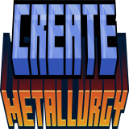
Create: Metallurgy
附属模组
机械动力：冶金学是 Luc_Creeper74 开发的 机械动力…
这是什么
机械动力：冶金学是 Luc_Creeper74 开发的 机械动力 拓展，适用于机械动力0.5.1c以上版本。
命名空间：
createmetallurgy 1.20.1 版本：本页物品与配方直接取自该版本的 jar。流体与储运47
熔融铝createmetallurgy:molten_aluminum
没有工作台/机器配方
熔融铝桶createmetallurgy:molten_aluminum_bucket
没有工作台/机器配方
熔融黄铜createmetallurgy:molten_brass
没有工作台/机器配方
熔融黄铜桶createmetallurgy:molten_brass_bucket
没有工作台/机器配方
熔融青铜createmetallurgy:molten_bronze
没有工作台/机器配方
熔融青铜桶createmetallurgy:molten_bronze_bucket
没有工作台/机器配方
熔融康铜createmetallurgy:molten_constantan
没有工作台/机器配方
熔融康铜桶createmetallurgy:molten_constantan_bucket
没有工作台/机器配方
熔融铜createmetallurgy:molten_copper
没有工作台/机器配方
熔融铜桶createmetallurgy:molten_copper_bucket
没有工作台/机器配方
熔融琥珀金createmetallurgy:molten_electrum
没有工作台/机器配方
熔融琥珀金桶createmetallurgy:molten_electrum_bucket
没有工作台/机器配方
熔融金createmetallurgy:molten_gold
没有工作台/机器配方
熔融金桶createmetallurgy:molten_gold_bucket
没有工作台/机器配方
熔融殷钢createmetallurgy:molten_invar
没有工作台/机器配方
熔融殷钢桶createmetallurgy:molten_invar_bucket
没有工作台/机器配方
熔融铁createmetallurgy:molten_iron
没有工作台/机器配方
熔融铁桶createmetallurgy:molten_iron_bucket
没有工作台/机器配方
熔融铅createmetallurgy:molten_lead
没有工作台/机器配方
熔融铅桶createmetallurgy:molten_lead_bucket
没有工作台/机器配方
熔融锂createmetallurgy:molten_lithium
没有工作台/机器配方
熔融锂桶createmetallurgy:molten_lithium_bucket
没有工作台/机器配方
熔融死灵合金createmetallurgy:molten_necromium
没有工作台/机器配方
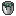
熔融死灵合金桶createmetallurgy:molten_necromium_bucket
没有工作台/机器配方
熔融下界合金createmetallurgy:molten_netherite
没有工作台/机器配方
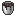
熔融下界合金桶createmetallurgy:molten_netherite_bucket
没有工作台/机器配方
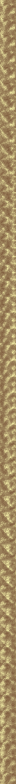
熔融镍createmetallurgy:molten_nickel
没有工作台/机器配方
熔融镍桶createmetallurgy:molten_nickel_bucket
没有工作台/机器配方
熔融顽金createmetallurgy:molten_obdurium
没有工作台/机器配方
熔融顽金桶createmetallurgy:molten_obdurium_bucket
没有工作台/机器配方
熔融锇createmetallurgy:molten_osmium
没有工作台/机器配方
熔融锇桶createmetallurgy:molten_osmium_bucket
没有工作台/机器配方
熔融银createmetallurgy:molten_silver
没有工作台/机器配方
熔融银桶createmetallurgy:molten_silver_bucket
没有工作台/机器配方
熔融炉渣createmetallurgy:molten_slag
没有工作台/机器配方
熔融炉渣桶createmetallurgy:molten_slag_bucket
没有工作台/机器配方
熔融钢createmetallurgy:molten_steel
没有工作台/机器配方
熔融钢桶createmetallurgy:molten_steel_bucket
没有工作台/机器配方
熔融锡createmetallurgy:molten_tin
没有工作台/机器配方
熔融锡桶createmetallurgy:molten_tin_bucket
没有工作台/机器配方
熔融钨createmetallurgy:molten_tungsten
没有工作台/机器配方
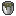
熔融钨桶createmetallurgy:molten_tungsten_bucket
没有工作台/机器配方
熔融虚空钢createmetallurgy:molten_void_steel
没有工作台/机器配方
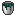
熔融虚空钢桶createmetallurgy:molten_void_steel_bucket
没有工作台/机器配方
熔融锌createmetallurgy:molten_zinc
没有工作台/机器配方
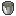
熔融锌桶createmetallurgy:molten_zinc_bucket
没有工作台/机器配方
建筑与装饰35
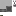
黑色灯泡createmetallurgy:black_light_bulb
蓝色灯泡createmetallurgy:blue_light_bulb
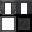
铸造台createmetallurgy:casting_table
青色灯泡createmetallurgy:cyan_light_bulb
污浊的金粉createmetallurgy:dirty_gold_dust
污浊的锌粉createmetallurgy:dirty_zinc_dust
石墨锭铸模createmetallurgy:graphite_ingot_mold
没有工作台/机器配方
石墨粒铸模createmetallurgy:graphite_nugget_mold
没有工作台/机器配方
石墨板铸模createmetallurgy:graphite_plate_mold
没有工作台/机器配方
石墨杆铸模createmetallurgy:graphite_rod_mold
没有工作台/机器配方
绿色灯泡createmetallurgy:green_light_bulb
淡蓝色灯泡createmetallurgy:light_blue_light_bulb
顽金块createmetallurgy:obdurium_block
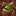
黑钨矿石createmetallurgy:wolframite_ore
没有工作台/机器配方
材料与零件15
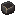
工业坩埚（半成品）createmetallurgy:incomplete_industrial_crucible
没有工作台/机器配方
其他11
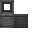
熔铸盖createmetallurgy:foundry_lid
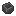
浇包框架（半成品）createmetallurgy:incomplete_ladle_frame
没有工作台/机器配方
转运浇包createmetallurgy:ladle
没有工作台/机器配方
稀有转运浇包createmetallurgy:rare_ladle
没有工作台/机器配方
炉渣createmetallurgy:slag
机器与设备8
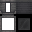
铸造盆createmetallurgy:casting_basin
粉碎钨矿石createmetallurgy:crushed_raw_tungsten
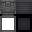
熔铸盆createmetallurgy:foundry_basin
石墨齿轮铸模createmetallurgy:graphite_gear_mold
没有工作台/机器配方
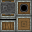
动力砂带磨床createmetallurgy:mechanical_belt_grinder
砂纸带createmetallurgy:sandpaper_belt
create:sandpaper
create:sandpaper
create:sandpaper
create:sandpaper
create:sandpaper
create:sandpaper
→
砂纸带工作台坚固搅拌器createmetallurgy:sturdy_whisk
交通与列车1
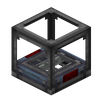
标签处理站createmetallurgy:labeling_station